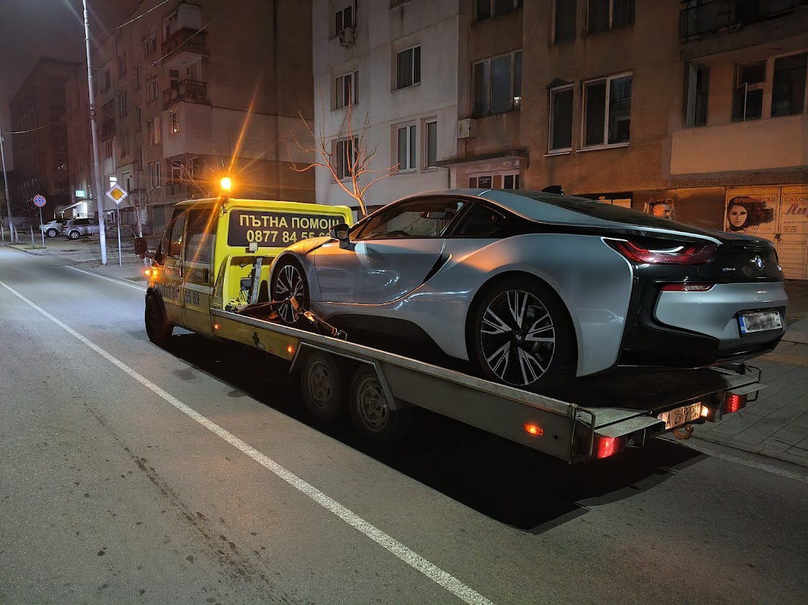
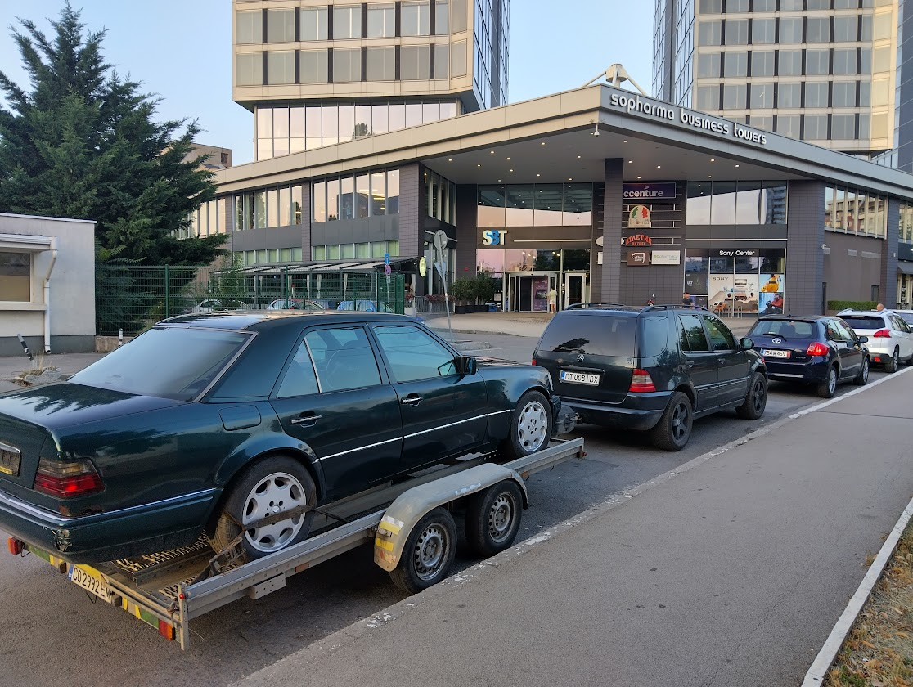
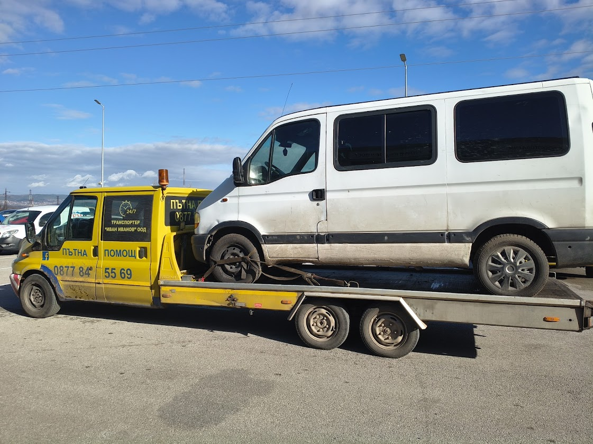
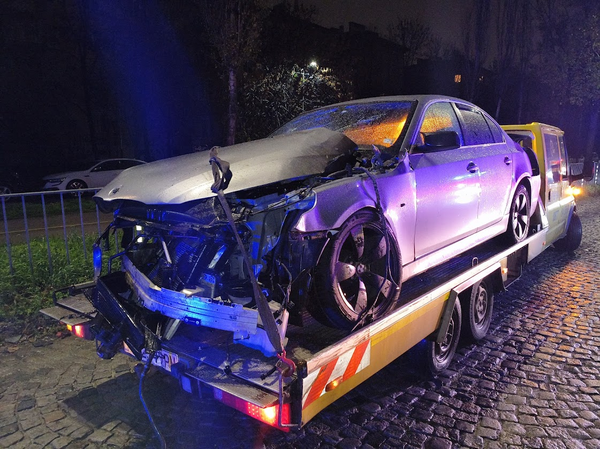
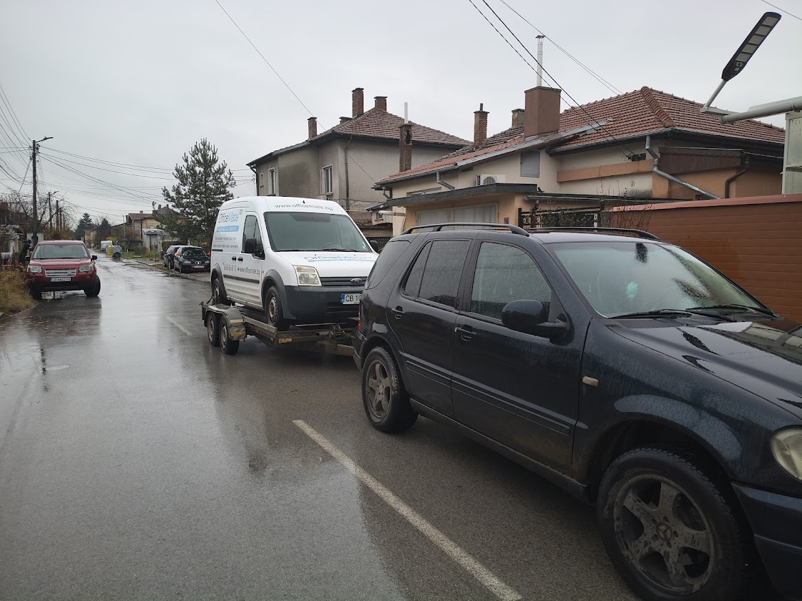

Нуждаете се от пътна помощ?
Ние сме тук 24/7! Единствената пътна помощ в региона, което ви дава ПРОЗРАЧНИ ЦЕНИ чрез онлайн калкулатор!
Денонощна пътна помощ и репатрак в Костинброд, Сливница, Калотина, Драгоман, Петрохан, Волуяк, Божурище и Гинци
Доверете се на 5-звездна услуга!
⭐ 5.0 Google – 83 отзива
⭐ 5.0 Trustindex – 89 отзива
Нашият Автопарк и Оборудване
Професионално оборудване и опитен екип за всеки тип МПС






САМО ПРИ НАС: Калкулатор за пресмятане на цена!
Знаете точната цена на курса преди да потеглим! Без скрити такси, без изненади!
ИЗЧИСЛЕТЕ ВАШАТА ЦЕНА СЕГА!
Нашите Услуги
- Денонощна пътна помощ Костинброд – автомобили, скутери, мотоциклети, джипове и бусове
- Транспорт на МПС в цялата страна - автомобили, мотори, АТВ, джипове
- Теглене на каравани, колесари с лодки и ремаркета
- Доставка на гориво при изчерпан резервоар (пътна помощ Калотина)
- Смяна на гума бързо и професионално
- 6 МЕСТА ЗА ПЪТНИЦИ - цялото семейство пътува с вас!
Цени на Услугите
(Всички цени са в двете посоки. За точна цена използвайте калкулатора)
МПС до 1500 кг
0.75 EUR/км (1. 47 лв/км)
Минимум: 40 EUR (78. 23 лв)
МПС 1500-2000 кг
0.85 EUR/км (1.66 лв/км)
Минимум: 45 EUR (88.01 лв)
МПС над 2000 кг
0.95 EUR/км (1.86 лв/км)
Минимум: 50 EUR (97.79 лв)
Обслужвани Райони
Бърза пътна помощ във всички близки градове и села
Защо да изберете нас?
- Професионализъм и надеждност. Нашите екипи са обучени и оборудвани за всякакви ситуации.
- Бърз отговор. Реагираме незабавно на всяка авария.
- Конкурентни и прозрачни цени. Ясна предварителна оферта.
- Доказано качество: Отлични отзиви в Google и Trustindex с рейтинг 5.0!
- Единствен калкулатор за цена: Знаете точно колко ще платите!
- Превоз на пътници: До 6 души пътуват с вас!
Наши партньори
Сътрудничим с водещи компании за по-добро обслужване.
Често Задавани Въпроси
Как да получа точна цена?
Използвайте нашия онлайн калкулатор или изпратете локацията си – получавате оферта незабавно.
Работите ли 24/7?
Да – денонощно обслужване 24/7 за всички аварии и репатрак услуги.
Мога ли да платя с карта (POS)?
Да – приемаме плащане с POS терминал на място.
Как да изпратя моята локация?
Натиснете бутона "Изпрати локация" на сайта или използвайте калкулатора.
Колко бързо пристигате?
Средно 30-40 минути, в зависимост от локацията и трафика.
Колко пътници може да превозите?
До 6 пътници заедно с аварирания автомобил.
Има ли скрити такси?
Не. Цената е прозрачна и предварително съобщена чрез калкулатора.
Отзиви от нашите доволни клиенти
⭐⭐⭐⭐⭐ Гордеем се с нашите 5.0 звезди в Google!
5.0⭐
83 отзива
Бързо, точно, професионално! Препоръчвам с две ръце!
Бързо, коректно и професионално обслужване! Оправдано доверие!
Много съм доволна! Дойдоха бързо, помогнаха ми и изчакаха търпеливо, за да си взема портмонето.